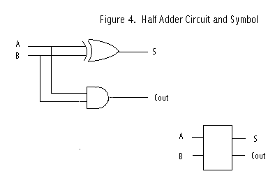

Half Adders are the next step to understanding full adders (actually, they are the last step, because once you understand half adders, the rest is easy). A half adder is simply an exclusive OR gate (as seen in the previous lesson) and an AND gate. Notice how the wires are connected together; if the wires were not connected properly, then the logic circuit would not work.

As you can see in Figure 4 above, a half adder also has its own unique symbol, represented by the drawing at the bottom right of the picture. The half adder has 2 inputs and 2 outputs.
Now it is time to learn binary mathematics. In the chart below are the rules of binary addition:
A + B = S and Cout is - 0 + 0 = 0 and Cout is 0 0 + 1 = 1 and Cout is 0 1 + 0 = 1 and Cout is 0 1 + 1 = 0 and Cout is 1
You also need to know that "1" equals an electrical charge. Now when you are building one with real transistors, you can understand what the circuit is doing.